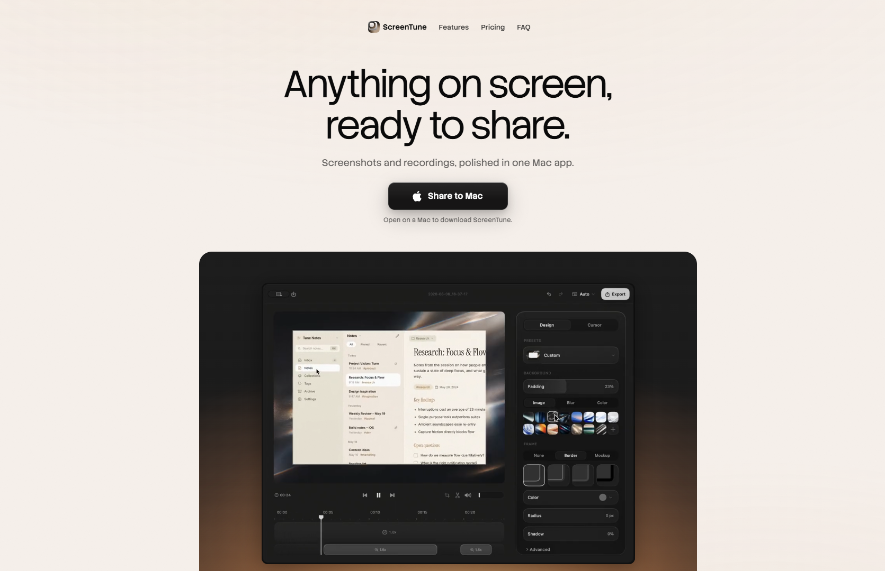

Сайт 019 · Лендинг · Сервисы и приложения
ScreenTune
8 место в чемпионате · 78.4 / 100
Screens/019.png, доминирующий цвет занимает 71% кадра.Что это
ScreenTune — одностраничный сайт приложения для macOS, которое делает скриншоты, записывает экран и редактирует результат. Визуально это тёплая кремовая страница с почти чёрным текстом и единственным карамельным акцентом, внутри которой тёмное окно редактора становится вторым миром. Главная механика — липкие скролл-сцены: полноэкранный фиксированный слой героя меняет геометрию и превращается в содержимое редактора, а интерфейс приложения пересобран настоящими элементами разметки — около двухсот классов с живыми ползунками, тумблерами и вкладками — и переключается классами-фазами по прогрессу скролла. Собрано как статический сайт без клиентского фреймворка, раздаётся через Vercel, плавный скролл — на Lenis.
Описание владельца коллекции: Уютный кремово-угольный сайт Mac-приложения для скриншотов и записи экрана. Необычные переходы от одного интерактивного демо к другому по скроллу.
Чем интересен
- Переход от первого экрана к демо сделан не анимацией картинки, а морфингом геометрии: полноэкранный фиксированный слой интерполируется по координатам и радиусу в прямоугольник внутри окна редактора — то есть герой физически «причаливает» и становится содержимым редактора.
- Интерактивные демо — не видео и не скриншоты, а заново собранный средствами разметки интерфейс приложения: около двухсот классов, живые ползунки с границами значений, свотчи фонов, вкладки, сетки рамок, устройств и курсоров, тумблеры с состоянием. Видео осталось только в первом экране и в карточках преимуществ.
- Смена сцен сделана переключением классов-фаз на контейнере по долям прогресса скролла с окном 0.055 и границами 0.25, 0.5 и 0.75 — то есть вся режиссура описана в стилях, а скрипт только считает прогресс.
- Lenis подключён деликатно: создаётся только если библиотека есть, карусель выведена из перехвата отдельным атрибутом, а демо-код слушает и нативный скролл, и событие библиотеки, и изменение размера.
- Есть полноценный статический вариант вместо простого отключения анимаций: при узком экране, грубом указателе или включённом «уменьшении движения» липкие секции становятся обычными, а скрипт демо на 75 килобайт вообще не загружается — только по первому скроллу, касанию или клавише; при смене режима страница перезагружается, чтобы два макета не жили одновременно.
- Кнопка скачивания подстраивается под платформу: на не-Mac она превращается в «поделиться ссылкой на Mac», подпись меняется, а клик копирует адрес с подтверждением — при этом подпись меняется и в блоке живых объявлений для скринридера.
- Сайт двуязычный: английская версия по умолчанию и полноценная японская локаль по адресам /ja, причём в карте сайта у каждой страницы проставлены альтернативные адреса обеих версий.
Все 30 номинаций сайта
Итог: 78.4 / 100 по профилю «Сервис, банк, образование». Первых мест в критериях: 10 (единолично 0, разделено 10), призовых мест: 12. Строки отсортированы по месту в номинации, ссылка ведёт к номинации в чемпионате.
- Интерактивные элементы
- Удобство интерфейса
- Соответствие бренду и ЦА
- Целостность
- Актуальность
- Грамотность
- SEO-оптимизация
- Адаптивность
- Доступность (a11y)
- Читабельность
- Попадание в номинацию
- Полнота реализации
- Интеграции
- Мультимедийность
- Стабильность
- Релевантность и полнота
- Креативность в решении задач
- Уникальность и экспертность
- Безопасность
- Прозрачность
- Интуитивность навигации
- Соответствие заявленному
- Уникальность предложения
- Инновационность в дизайне
- Отзывы и рейтинги
- Работа форм и поиска
- Современные технологии
- Эстетика и оригинальность
- Экспертность
- Социальная ответственность
Обоснования по разделам
- Юзабилити и UX
- Переходы между сценами сделаны липкими слоями с морфингом геометрии, а демо — настоящий интерфейс приложения с живыми контролами; мешает мелочь: вместо полноценных контактов только почта поддержки и профиль в соцсети.
- Дизайн и визуальное восприятие
- Кремовая страница с угольным текстом и единственным карамельным акцентом, внутри которой открывается тёмное окно редактора; контраст двух миров и есть основной приём.
- Контент
- Возможности, три сценария использования, восемь вопросов в FAQ, цены 35 и 89 долларов и журнал изменений с версиями — материал подан без воды.
- Техническое качество
- Статика без фреймворка с robots, картой сайта на две локали и микроразметкой приложения и FAQ; счётчик Google Analytics подключается лениво, но без запроса согласия.
- Функциональность и интерактивность
- Демо редактора и форматов действительно интерактивны, кнопка скачивания подстраивается под платформу и умеет копировать ссылку; форм обратной связи и поиска нет.
- Доверие и репутация
- Есть политика и условия с датами, право Японии, продавец и оговорка о распространении вне Mac App Store; названия юрлица и регистрационных номеров нет.
- Инновации и технологичность
- Морфинг полноэкранного слоя в окно редактора и пересобранный разметкой интерфейс приложения вместо видео — редкое сочетание; плюс честный статический вариант для узких экранов.
- Соответствие категории и целям
- Лендинг закрывает всё, что нужно для покупки утилиты: что умеет, сколько стоит и что с приватностью — и показывает продукт в работе, а не на картинке.
Что не проверено
- Рендер в браузере не выполнялся: вычисленные значения, фактические тайминги и то, как переходы выглядят в движении, не наблюдались — механика выведена из разметки, стилей и кода.
- Расхождение скриншота 019.png с текущей версией: на снимке другой подзаголовок и кнопка «Share to Mac» с подписью «Open on a Mac to download ScreenTune.», тогда как живая страница для настольного браузера отдаёт «Screen recorder & screenshot editor for Mac.» и «Download for Mac». Тексты со снимка в разметке есть — как часть макета внутри демо и как вариант кнопки для не-Mac, но чем вызвано расхождение (снимали не с Mac или это более ранняя версия), без рендера не установлено.
- Итоговая высота скролл-трека секции демо выведена из каскада стилей, а не измерена: два правила с одинаковой специфичностью задают разную высоту, и порядок в файле решает исход — фактическое поведение в браузере не проверено.
- Путь к фиду обновлений приложения не найден: каталог обновлений закрыт в robots, а ожидаемые адреса отдают 404, хотя политика описывает периодическую проверку обновлений.
- Наличие звуковых эффектов не доказано и не опровергнуто: в разметке нет аудио, а скрипт минифицирован; кастомного курсора в стилях тоже нет.
- Юридические реквизиты отсутствуют: названия юрлица, регистрационного номера, VAT и адреса на сайте нет — только почта поддержки и профиль в X.
- Платёжный контур не установлен: страницы покупки отдают разметку стороннего провайдера, но какой именно домен обслуживает оплату, не проверялось.
- Версии библиотек не определены: строки версии в минифицированном скрипте нет.
- Публично доступен неманифицированный скрипт демо при том, что страница подключает сжатую версию; намеренность публикации исходника не подтверждена.
- Соответствие скриншота 019.png текущему состоянию сайта частично расходится (см. выше), дата снимка неизвестна.
Паспорт
- Домен
- screentune.app
- Тип сайта
- Лендинг
- Категории
- Сервисы и приложения
- Подкатегории
- Продуктивность
- Для кого
- Обычным пользователям, Дизайнерам, Разработчикам
- Стиль
- Минимализм, Утилитарный техно
- Приёмы
- Липкие секции, Скроллителлинг, Микроанимации, Видео-фон
- Технологии
- Статический HTML, CSS и JavaScript без фреймворка, Vercel, Lenis, Своя сборка сжатых ассетов, Самохостинг вариативных шрифтов, Медиа с ленивой загрузкой, Google Analytics 4, Оплата и обновления приложения
- Язык
- Мультиязычный
- Страна
- Япония — по праву в условиях использования с исключительной юрисдикцией японских судов, по полноценной японской локали в карте сайта и по японскому шрифту в запасном стеке; юридического адреса и регистрационных данных на сайте нет
- Автор
- Сакино Томиура (Sakino Tomiura) — указан в мета-теге автора и в микроразметке как Person, издатель — организация ScreenTune
- Год
- 2026
- Добавлен
- 2026-10-02
Палитра
- #F4EEE8 — 71% кадра
- #1B1B1A — 22% кадра
- #523D31 — 4% кадра
- #9C9891 — 1% кадра
- #CCC8C2 — 1% кадра
измерено из Screens/019.png (кремовый занимает 71% кадра, угольный 22%); токены сайта: фон страницы #F6F0EB, текст #0A0A0A, карамельный акцент #D19461, поверхность демо #1E1E1E
- Режим
- Светлая
- Цвет фона
- Нейтральный
Чемпионат
8 место из 31 · 78.4 / 100 · первых мест 10 из 30 · сильнее всего: Интерактивные элементы (1 место)
- Удобство интерфейса — 1 место, 9 баллов
- Адаптивность — 1 место, 8 баллов
- Доступность (a11y) — 1 место, 8 баллов
- Соответствие бренду и ЦА — 1 место, 9 баллов
- Читабельность — 1 место, 8 баллов
- Целостность — 1 место, 9 баллов
- Актуальность — 1 место, 9 баллов
- Грамотность — 1 место, 9 баллов
- SEO-оптимизация — 1 место, 9 баллов
- Интерактивные элементы — 1 место, 10 баллов
Технические факты
- HTTPS
- да
- Meta viewport
- да
- Title
- ScreenTune — macOS screen recorder & screenshot editor (54 симв.)
- Description
- Record Mac demos, annotate screenshots, and follow clicks with Auto Zoom. Edit and export in one app. Try every feature free for 7 days. (136 симв.)
- Open Graph
- да
- Структурированные данные
- да
- Sitemap
- есть: /sitemap.xml на десять адресов с парами языков и датами обновления
- Robots
- User-agent: * / Allow: /, закрыт служебный каталог обновлений, указана директива Sitemap
- Аналитика
- Google Analytics 4 (G-BNZC8K82YV), подключается лениво
- Проверено ссылок
- 21
- Битые ссылки
- нет
- Контакты
- почта support@screentune.app с подписью «Contact» и ссылка на профиль в X; телефона и адреса нет
- Юридическая информация
- знак охраны прав © 2026 ScreenTune, отдельные страницы политики конфиденциальности и условий с датами; в условиях — год обновлений при покупке, возвраты через платёжного провайдера, японское право; названия юрлица и регистрационных номеров нет
Технологии с доказательствами
- Статический HTML, CSS и JavaScript без фреймворка — в отданной разметке нет признаков Next, Nuxt, Astro, Svelte, Webflow, Framer, Tilda, WordPress и Gatsby, нет тега generator; классы написаны руками, версии ассетов проставлены вручную
- Vercel — заголовки Server: Vercel, X-Vercel-Cache: HIT, статика с годовым кэшем
- Lenis — в demo.js создаётся экземпляр с длительностью 1.4, экспоненциальной кривой и множителем колеса 0.9; ссылка на него лежит в window, а карусель преимуществ выведена из перехвата атрибутом data-lenis-prevent
- Своя сборка сжатых ассетов — подключаются styles.min.css, demo.min.css, demo.min.js, landing.min.js и mobile-menu.js с хешами версий в запросе
- Самохостинг вариативных шрифтов — правила @font-face на Stack Sans Headline и Stack Sans Text с локальными файлами, весом 300–700 и font-display: swap
- Медиа с ленивой загрузкой — постер первого экрана в WebP с набором ширин до 2268 и видео с preload=none; в карточках преимуществ — пары постера WebP и зацикленного mp4
- Google Analytics 4 — отдельный analytics.min.js подключает gtag с идентификатором G-BNZC8K82YV лениво, через десять секунд простоя, с вырезанием похожих на почту значений
- Оплата и обновления приложения — страницы покупки отдают разметку внешнего платёжного провайдера, в политике указаны Lemon Squeezy как продавец и японское право; фид обновлений Sparkle упомянут в политике, но путь к нему не найден
Что смотреть в первую очередь
Смотреть ради перехода между демо: полноэкранный слой героя морфит геометрию в окно редактора, а сам редактор — настоящая разметка с живыми ползунками, а не видео; отдельно поучителен статический вариант для узких экранов и «уменьшения движения», где тяжёлый скрипт вообще не загружается.
Похожие в коллекции
- Orbify — общее: Сервисы и приложения, Утилитарный техно, Минимализм, Видео-фон, Скроллителлинг, Микроанимации
- Glide — общее: Сервисы и приложения, Минимализм, Утилитарный техно, Скроллителлинг, Липкие секции, Микроанимации
- Aevion — общее: Утилитарный техно, Минимализм, Скроллителлинг, Липкие секции, Микроанимации
- Dia — общее: Сервисы и приложения, Минимализм, Скроллителлинг, Микроанимации, Видео-фон